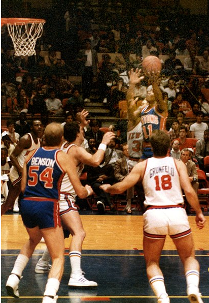

Pistons

The Detroit Pistons are an American professional basketball team based in Detroit. The Pistons compete in the National Basketball Association (NBA) as a member of the league's Eastern Conference Central Division and play their home games at Little Caesars Arena, located in Midtown. The team was founded in Fort Wayne, Indiana as the Fort Wayne Zollner Pistons in 1941, a member of the National Basketball League (NBL), where it won two NBL championships: in 1944 and 1945. The Pistons later joined the Basketball Association of America (BAA) in 1948. The NBL and BAA merged to become the NBA in 1949, and the Pistons became part of the merged league. In 1957, the franchise moved to Detroit. The Pistons have won three NBA championships: in 1989, 1990 and 2004.
Isiah Lord Thomas III (born April 30, 1961) is an American former professional basketball player, coach and executive who is an analyst for NBA on TNT. He played his entire professional career for the Detroit Pistons of the National Basketball Association (NBA). A point guard, the 12-time NBA All-Star was named one of the 50 Greatest Players in NBA History and inducted into the Naismith Memorial Basketball Hall of Fame.
 Blake Austin Griffin (born March 16, 1989) is an American professional basketball player for the Detroit Pistons of the National Basketball Association (NBA). He played college basketball for the Oklahoma Sooners, when he was named the Consensus National Player of the Year as a sophomore. Griffin was selected first overall by the Los Angeles Clippers in the 2009 NBA draft, and has since been a six-time NBA All-Star and a five-time All-NBA selection.
Griffin won four high school state titles at Oklahoma Christian School under his father, head coach Tommy Griffin. Griffin played two seasons of college basketball for the Sooners before entering the 2009 NBA draft, when he was selected by the Clippers. During the final pre-season game of 2009, he broke his left kneecap, had surgery, and missed the entire 2009–10 season. Griffin made his NBA debut as a rookie the following season, in which he was selected as an All-Star, won the NBA Slam Dunk Contest, and was named the NBA Rookie of the Year. In 2011, Sports Illustrated called him one of the NBA's 15 Greatest Rookies of All Time.
Blake Austin Griffin (born March 16, 1989) is an American professional basketball player for the Detroit Pistons of the National Basketball Association (NBA). He played college basketball for the Oklahoma Sooners, when he was named the Consensus National Player of the Year as a sophomore. Griffin was selected first overall by the Los Angeles Clippers in the 2009 NBA draft, and has since been a six-time NBA All-Star and a five-time All-NBA selection.
Griffin won four high school state titles at Oklahoma Christian School under his father, head coach Tommy Griffin. Griffin played two seasons of college basketball for the Sooners before entering the 2009 NBA draft, when he was selected by the Clippers. During the final pre-season game of 2009, he broke his left kneecap, had surgery, and missed the entire 2009–10 season. Griffin made his NBA debut as a rookie the following season, in which he was selected as an All-Star, won the NBA Slam Dunk Contest, and was named the NBA Rookie of the Year. In 2011, Sports Illustrated called him one of the NBA's 15 Greatest Rookies of All Time.